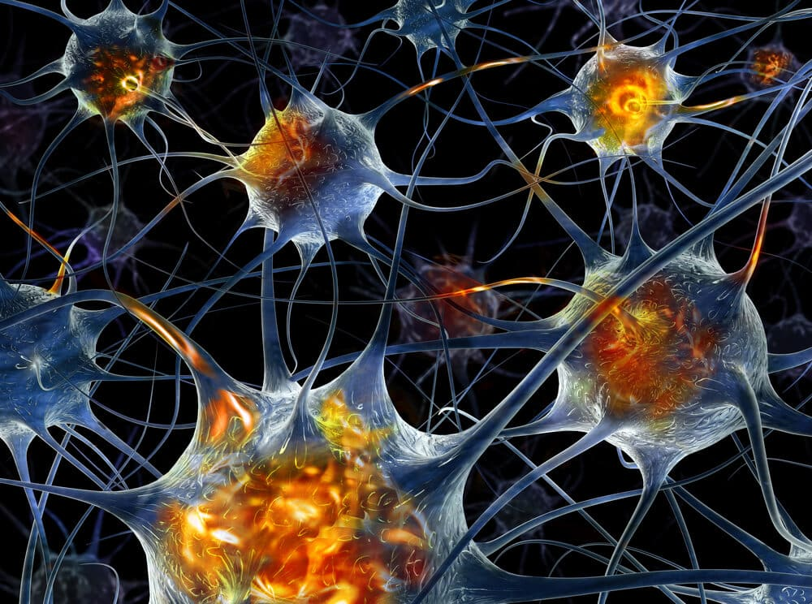

עובדות מרתקות על המוח האנושי
מערכת העצבים המרכזית היא המחשב המשוכלל ביותר בטבע. כדי להבין איך המוח מנהל את הגוף, את המחשבות ואת הרגשות שלנו, אספנו עבורכם כמה נתונים ועובדות מרכזיות מתוך תיקי החקירה הנוירולוגיים.
- תאי עצב: המוח מכיל כ-86 מיליארד נוירונים המתקשרים ביניהם ללא הפסקה.
- צריכת אנרגיה: למרות שהמוח מהווה רק 2% ממשקל הגוף, הוא צורך כ-20% מהחמצן והאנרגיה שלו.
- מהירות המידע: אותות עצביים נעים במוח במהירות מטורפת של עד 400 קילומטר לשעה.
- יצירת זיכרונות: המוח מסוגל לאחסן מידע בכמות כמעט בלתי מוגבלת, המוערכת במיליוני ג'יגה-בייט.
- פעילות בלילה: המוח שלכם פעיל מאוד בזמן שינה, ומנצל את הזמן הזה לארגון הזיכרונות וניקוי רעלים.
